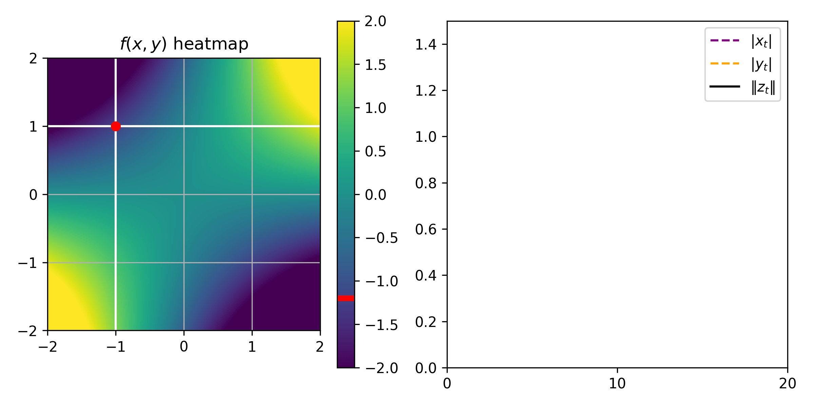
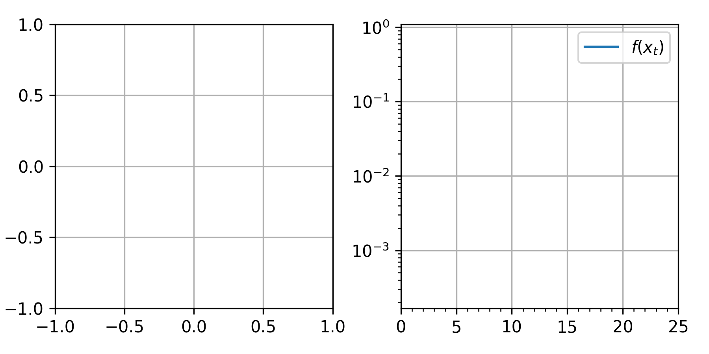
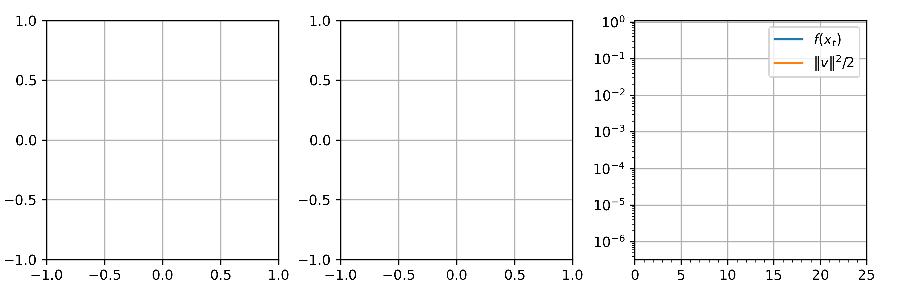
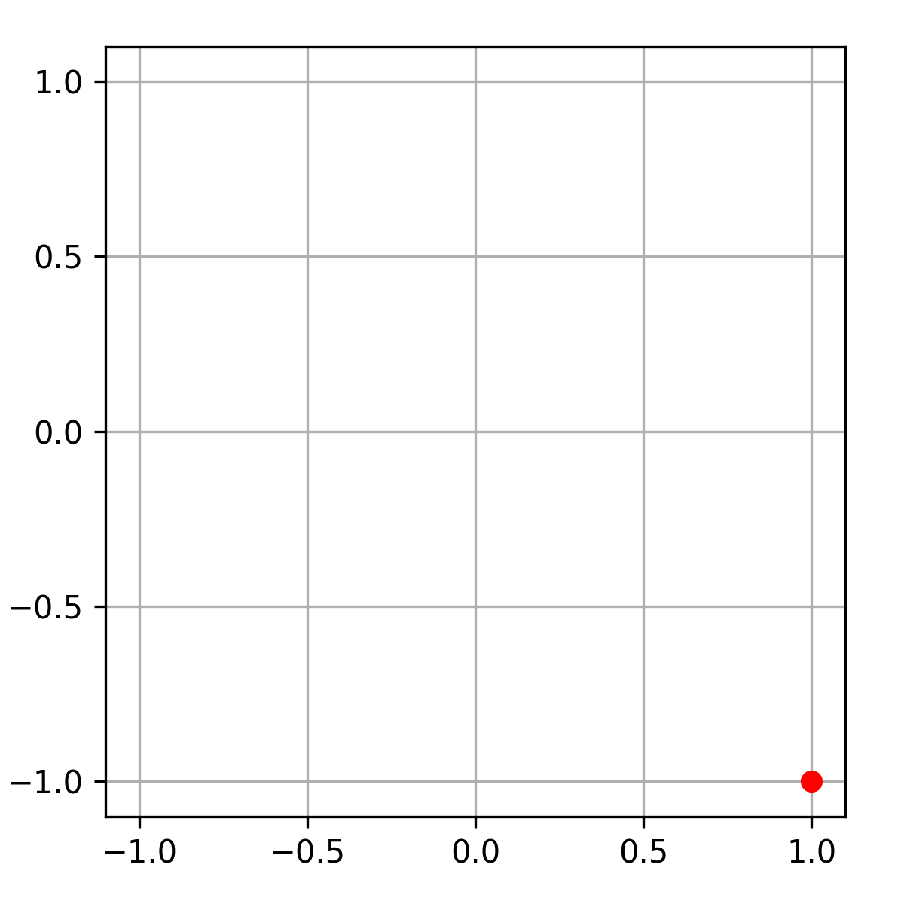
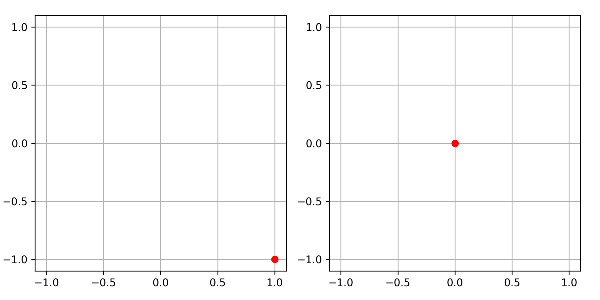

This is the continuation of my previous blog post about hypocoercivity. If you haven’t already, I would recommend starting with the first part. Recall that:
We call a matrix \(M\) hypocoercive if the linear dynamical system \(\dot{x}_t = -M x_t\) converges to \(0\) exponentially, i.e., \(\left\lVert x_t \right\rVert \leq C e^{-\alpha t} \left\lVert x_0 \right\rVert\) for some \(C, \alpha>0\) for any \(x_0\).
We denote the optimal exponential convergence rate by \(\alpha(M)\), and it is characterized by \(\alpha(M) = \min_{\lambda \in \mathrm{Sp}(M)} \Re(\lambda)\) where \(\mathrm{Sp}(\cdot)\) denotes the set of eigenvalues.
If \(S\) is symmetric positive-semi-definite (PSD), and \(A\) is antisymmetric, then \(M=S+A\) is hypocoercive if and only if no non-zero eigenvector of \(A\) lies in \(\mathop{\mathrm{Ker}}S\) (Kawashima’s condition).
For a complex matrix or vector \(P \in \mathbb{C}^{d_1 \times d_2}\), I will write indifferently \(P^*\) or \(\overline P^\top\) for the conjugate transpose.
In this second part, the goal is to review three situations of interest for machine learning where hypocoercivity comes up.
Gradient descent-ascent for min-max optimization
Consider a min-max optimization problem \(\min_{x \in \mathbb{R}^{d_x}} \max_{y \in \mathbb{R}^{d_y}} f(x, y)\). That is, we look for a couple \((x^*, y^*)\) such that \(x^* = \mathop{\mathrm{arg\,min}}f(\cdot, y^*)\) and \(y^* = \mathop{\mathrm{arg\,max}}f(x^*, \cdot)\) (we assume that such a couple exists). The simplest algorithm to do this is gradient descent-ascent; let’s focus on its continuous-time limit, which is the ODE \[\begin{pmatrix} \dot{x}_t \\ \dot{y}_t \end{pmatrix} = \begin{pmatrix} -\nabla_x f(x_t, y_t) \\ \nabla_y f(x_t, y_t) \end{pmatrix}.\] To simplify even further, let’s assume \(f\) is quadratic: \(f(x, y) = \begin{pmatrix} x \\ y \end{pmatrix}^\top \begin{bmatrix} Q & P \\ P^\top & -R \end{bmatrix} \begin{pmatrix} x \\ y \end{pmatrix}\) with \(Q\) and \(R\) symmetric w.l.o.g. Then the above ODE is linear: \[\dot{z}_t = -M z_t ~~~~\text{where}~~~~ z_t = \begin{pmatrix} x_t \\ y_t \end{pmatrix} ~~\text{and}~~ M = \begin{bmatrix} Q & P \\ -P^\top & R \end{bmatrix}.\] Additionally, let’s assume \(Q\) and \(R\) are PSD, because that’s the necessary and sufficient condition for the existence of \((x^*, y^*)\). For simplicity, let’s also assume \(M\) is invertible, which is the necessary and sufficient condition for \((x^*, y^*)\) to be unique; in this case \((x^*, y^*) = (0, 0)\).

The two most urgent questions in this setting, from an optimization point of view, are
Does the gradient descent-ascent flow ODE converge to \((x^*, y^*)\) (qualitatively)?
If yes, what is the convergence rate (quantitatively)?
This is equivalent to asking about the convergence of the linear dynamical system \(\dot{z}_t = -M z_t\), and so, about the hypocoercivity of \(M\).
For the qualitative question, thanks to the assumptions, the symmetric part of \(M\) is PSD, so we can apply Kawashima’s condition. We end up with a necessary and sufficient condition involving the singular vectors of \(P\) and the kernel of \(Q\) and \(R\), left as an exercise.
For the quantitative question, we know that the convergence is exponential with rate \(\alpha(M)\) by definition, but this quantity is not really explicit: it depends on \(Q, P\) and \(R\) in a complicated way. Getting explicit lower bounds on \(\alpha(M)\) is really tricky, and the only convincing result I know of (outside of the coercive case) is the following. 1
1 Besides this proposition, another relevant work is (Wang and Chizat 2023), which analyzes the expected value of \(\alpha(M)\) when \(Q, R\) are fixed and the entries of \(P\) are i.i.d. Gaussians. (There are also high-probability bounds, and the assumptions extend slightly beyond all-Gaussian \(P\).) I wouldn’t really call this an explicit bound though.
Proposition 1 ((Nagarajan and Kolter 2017, Appendix G) (Zhang et al. 2022, Theorem 6)) Consider the block matrix \(M = \begin{bmatrix} Q & P \\ -P^\top & R \end{bmatrix} \in \mathbb{R}^{(d_x+d_y) \times (d_x+d_y)}\) where \(Q, R\) are symmetric positive-semi-definite. If \(R \succeq \beta I_{d_y}\) and \(P\) is full-row-rank (i.e., wide and full-rank) then \[\alpha(M) = \min_{\lambda \in \mathrm{Sp}(M)} \Re(\lambda) \geq \min\left( \frac{\beta}{2}, \frac{\sigma_{\min}(PP^\top)}{\sigma_{\max}(R)} \right).\]
Accelerated gradient flows
For a function \(f: \mathbb{R}^d \to \mathbb{R}\), consider the ODE system \[\begin{cases} \dot{x}_t = v_t, \\ \dot{v}_t = -\nabla f(x_t) - \gamma v_t. \end{cases} \tag{1}\] Here the variable \(x_t \in \mathbb{R}^d\) can be thought of as the position in space of a particle, and \(v_t \in \mathbb{R}^d\) as its instantaneous velocity. In this interpretation, the particle has mass \(=1\) and follows Newton’s second law of motion (mass\(\times\)acceleration=force), and is subjected to two kinds of forces: a conservative force with potential energy \(f(x)\), and a friction force proportional to velocity. So it is intuitive that \((x_t, v_t)\) should converge to \((x^*, 0)\) as \(t \to \infty\), where \(x^*\) is a local minimum of the potential energy \(f\).
This intuition inspired optimizers to propose (discrete-time) algorithms based on the ODE system (Eq. 1), for minmization problems \(\min_{x \in \mathbb{R}^d} f(x)\). The most famous ones are Polyak’s heavy-ball method and Nesterov’s accelerated gradient descent. In turn, in order to analyze their convergence properties, some researchers have turned back to studying the continuous-time limit of these algorithms (Su et al. 2016). The history of this idea is nicely explained in this blog post by Andre Wibisono.
Let us now focus on the ODE system (Eq. 1). To simplify things, similarly to the previous example, let’s assume \(f\) is quadratic, \(f(x) = \frac12 x^\top H x\) with \(H\) positive-definite; in particular the only local minimum is \(x^*=0\). Then we can rewrite (Eq. 1) as \[\dot{z}_t = -M z_t ~~~~\text{where}~~~~ z_t = \begin{pmatrix} x_t \\ v_t \end{pmatrix} ~~\text{and}~~ M = \begin{bmatrix} 0 & -I_d \\ H & \gamma I_d \end{bmatrix}.\] Again, the most urgent questions are: does this dynamical system converge to \((x^*, 0)\)? and if yes, what is the convergence rate? This time, there is only one “unknown” matrix \(H\), so we can give a full characterization.
Proposition 2. Let \(H \in \mathbb{R}^{d \times d}\) be a symmetric matrix, denote its spectrum by \(\{ \lambda_1, ..., \lambda_d \}\), and assume that \(\beta \coloneqq \min_j \lambda_j >0\). Let \(M = \begin{bmatrix} 0 & -I_d \\ H & \gamma I_d \end{bmatrix}\). We have \[\mathrm{Sp}(M) % = \spectrum\left( % \begin{bmatrix} % 0 & 0 \\ % 1 & 0 % \end{bmatrix} % \otimes H % + \begin{bmatrix} % 0 & -1 \\ % 0 & \gamma % \end{bmatrix} % \otimes I_d % \right) = \bigcup_{j \leq d} \mathrm{Sp}\left( \begin{bmatrix} 0 & -1 \\ \lambda_j & \gamma \end{bmatrix} \right) = \bigcup_{j \leq d}~ \{X_j^+, X_j^-\}\] where \(X_j^{\pm} = \frac{\gamma}{2} \pm \frac12 \sqrt{\gamma^2-4\lambda_j}\). In particular, for \(\gamma = 2 \sqrt{\min_j \lambda_j}\), the square-root term in \(X_j^\pm\) is imaginary for all \(j\), and so \(\alpha(M) = \frac\gamma2 = \sqrt{\beta}\).
Comparison with vanilla gradient flow
Gradient flow for the quadratic function \(f(x) = \frac12 x^\top H x\) is the ODE \(\dot{x}_t = -\nabla f(x_t) = -H x_t\). Let’s assume, as in the proposition above, that the symmetric matrix \(H\) is positive-definite, and let \(\beta \coloneqq \min \mathrm{Sp}(H) >0\). By decomposing the gradient flow ODE in the eigenbasis of \(H\), we see that \(\left\lVert x_t \right\rVert = \Theta(e^{-\beta t})\). 2
2 More precisely, \(e^{-\beta t} \left\lVert \Pi x_0 \right\rVert = \left\lVert \Pi x_t \right\rVert \leq \left\lVert x_t \right\rVert \leq e^{-\beta t} \left\lVert x_0 \right\rVert,\) where \(\Pi\) is the orthogonal projector onto the least eigenspace of \(H\).
Thus, the exponential convergence rate of gradient flow is \(\beta\), while that of accelerated gradient flow (Eq. 1) is \(\sqrt{\beta}\) (for the optimal choice of friction coefficient), which is much faster if \(\beta \ll 1\)! This insight continues to hold for non-quadratic \(f\)’s, and for discrete-time versions of the dynamics. For a full discussion, see the already mentioned blog post by Andre Wibisono.


Underdamped Langevin dynamics
This last example is not finite-dimensional, despite this blog post’s title. It’s the most classical PDE where we see a hypocoercivity phenomenon, and it’s also highly relevant in the context of sampling, which is a common task in machine learning. So I decided to include a brief discussion of it, though there would be much, much more to say.
Background: the overdamped Langevin (OL) dynamics
Let \(\nu = e^{-V(x)} \mathrm{d}x \in \mathcal{P}(\mathbb{R}^d)\) with \(V\) smooth and satisfying appropriate growth conditions. The overdamped Langevin dynamics (for an initial distribution \(\mu_0\)) is the stochastic process given by the SDE \[\mathrm{d}X_t = -\nabla V(X_t) \mathrm{d}t + \sqrt{2} \mathrm{d}B_t,\] with \(B_t\) a Brownian motion and \(X_0 \sim \mu_0\). In many settings, all we care about is the time-evolution of \(\mu_t \coloneqq \mathrm{Law}(X_t)\) (rather than path-wise properties of the process), so in the sequel, I will refer to \((\mu_t)_t\) itself as the overdamped Langevin dynamics. Namely, its evolution is described by the PDE 3 \[\partial_t \mu_t = \nabla \cdot (\mu_t \nabla \log \frac{\mu_t}{\nu}).\] It is often convenient to restate it in terms of \(\rho_t = \frac{\mathrm{d}\mu_t}{\mathrm{d}\nu}\), namely, \[\partial_t \rho_t = \frac{1}{\nu} \nabla \cdot (\nu \nabla \rho) = \Delta \rho - \nabla \log V \cdot \nabla \rho.\] There are several natural metrics to measure the speed of convergence of OL:
3 To derive the overdamped Langevin PDE starting from the SDE, fix a test function \(\varphi\) and verify that \(\frac{d}{dt} \mathbb{E}\varphi(X_t) = \int_{\mathbb{R}^d} \varphi (\partial_t \mu_t)\) thanks to Itô’s formula. For the underdamped Langevin PDE from the SDE, same thing except with a test function \(\psi(x, p)\).
Convergence in Wasserstein distance refers to \(W_2^2(\mu_t, \nu)\) going to \(0\).
- If \(\nu\) satisfies a so-called Talagrand inequality, then Wasserstein convergence implied by KL or \(L^2\) convergence.
Convergence in Kullback-Leibler (KL) divergence refers to \(\mathsf{KL}\left( \mu_t \middle\| \nu \right) = \int_{\mathbb{R}^d} \log(\frac{\mathrm{d}\mu_t}{\mathrm{d}\nu}) \mathrm{d}\mu_t\) going to \(0\).
Since \(\mathsf{KL}\left( \cdot \middle\| \cdot \right) \leq \chi^2\left( \cdot \middle\| \cdot \right)\), of course KL convergence is implied by \(L^2\) convergence.
If \(\nu\) satisfies a so-called log-Sobolev inequality (LSI), then OL converges exponentially in KL.
Convergence in \(\chi^2\) refers to \(\chi^2\left( \mu_t \middle\| \nu \right) = \int_{\mathbb{R}^d} (\frac{\mathrm{d}\mu_t}{\mathrm{d}\nu}-1)^2 \mathrm{d}\nu\) going to \(0\). This is also called \(L^2\) convergence because \(\chi^2\left( \mu_t \middle\| \nu \right) = \left\lVert \rho_t - 1 \right\rVert_{L^2_\nu}\).
- If \(\nu\) satisfies a Poincaré inequality (PI), i.e., if \(\forall f ~\text{s.t.}~ {\int f \mathrm{d}\nu=0,} \int \left\lvert f \right\rvert^2 \mathrm{d}\nu \leq \frac{1}{c_{\mathrm{PI}}} \int \left\lVert \nabla f \right\rVert^2 \mathrm{d}\nu\) for some \(c_{\mathrm{PI}}>0\), then OL converges exponentially in \(L^2\).
Remark. The convergence results for OL mentioned here are classical in the sampling literature. Their proofs can be found in the paper (Vempala and Wibisono 2019) or in Sinho Chewi’s book draft “Log-Concave Sampling”, both of which are excellent and pretty accessible.
Definition of the underdamped Langevin (UL) dynamics
Let \(\nu^x = e^{-V(x)} \mathrm{d}x \in \mathcal{P}_2(\mathbb{R}^d)\) and \(\gamma >0\) a friction coefficient. The underdamped Langevin dynamics (for an initial distribution \(\mu_0(\mathrm{d}x, \mathrm{d}p) \in \mathcal{P}_2(\mathbb{R}^d \times \mathbb{R}^d)\)) is the stochastic process given by the SDE 4 \[\begin{cases} \mathrm{d}X_t = P_t \mathrm{d}t \\ \mathrm{d}P_t = -\nabla V(X_t) \mathrm{d}t - \gamma P_t \mathrm{d}t + \sqrt{2 \gamma} \mathrm{d}W_t \end{cases}\] with \(B_t\) a Brownian motion and \((X_0, P_0) \sim \mu_0\). Similar to OL, we are often concerned with the time-evolution of \(\mu_t = \mathrm{Law}(X_t, P_t) \in \mathcal{P}_2(\mathbb{R}^d \times \mathbb{R}^d)\), which is described by the PDE \[\partial_t \mu_t = \nabla_p \cdot (\mu_t \nabla V(x)) - \nabla_x \cdot \left( \mu_t p \right) + \gamma \nabla_p \cdot (\mu_t p) + \gamma \Delta_p \mu_t\] where \(\mu^x(\mathrm{d}x)\) denotes the \(x\)-marginal of \(\mu\). Stated in terms of \(\rho_t(x,p) = \frac{\mathrm{d}\mu_t}{\mathrm{d}\nu}(x,p)\), this rewrites \[\partial_t \rho_t = -p \cdot \nabla_x \rho_t + \nabla V(x) \cdot \nabla_p \rho_t + \gamma (\Delta_p \rho_t - p \cdot \nabla_p \rho_t) \eqqcolon -L \rho_t. \tag{2}\] Here, \(L\) is an operator over the Hilbert space \(L^2_\nu(\mathbb{R}^d \times \mathbb{R}^d)\). So the infinite-dimensional nature of the dynamics is conceptually manageable, since Hilbert spaces are relatively tame as far as infinite-dimensional spaces go.
4 The underdamped Langevin dynamics is sometimes defined with a mass constant and a temperature constant, but they can both be set to \(1\) up to time-rescaling and rescaling of \(V\).
One can show that the unique stationary distribution of UL is \(\nu(\mathrm{d}x, \mathrm{d}p) = \nu^x(\mathrm{d}x) \otimes \nu^p(\mathrm{d}p)\), where \(\nu^x(\mathrm{d}x) = e^{-V(x)} \mathrm{d}x\) and \(\nu^p(\mathrm{d}p) = \frac1Z e^{-\left\lVert p \right\rVert^2/2} \mathrm{d}p\). Same as for OL, one can consider convergence in Wasserstein distance \((W_2^2(\mu_t, \nu) \to 0)\), or in KL divergence \((\mathsf{KL}\left( \mu_t \middle\| \nu \right) \to 0)\), or in \(\chi^2\) a.k.a. \(L^2\) convergence \((\left\lVert \rho_t-1 \right\rVert_{L^2_\nu} \to 0)\).
Remark (Comparison with gradient flow). At the level of stochastic processes, OL can be viewed as gradient flow with additional isotropic noise, and UL can be viewed as accelerated gradient flow with additional noise but only on the momentum variable \(P_t\). This is illustrated in the gifs below.
Notice how the trajectory \((X_t)_t\) for UL is much smoother than for OL. This pathwise-smoothness property makes UL somehow easier to discretize in time, which is beneficial for sampling applications. But this property of UL as a process is unrelated to its convergence rate as a PDE, which is this blog post’s focus.


Reduction to (hypo)coercivity in Hilbert spaces
At the level of PDEs,
OL can be viewed as a linear dynamical system \(\partial_t \rho_t = -L^{\mathsf{OL}} \rho_t\) on \(L^2_{\nu^x}(\mathbb{R}^d)\), with the linear operator \(L^{\mathsf{OL}} = \Delta - \nabla \log V \cdot \nabla\) being symmetric. In fact one can check that, formally, \(L^{\mathsf{OL}} = \nabla^* \nabla\) where \(*\) denotes adjoints in \(L^2_{\nu^x}\), i.e., 5 \[\forall f, g \in L^2_{\nu^x}(\mathbb{R}^d),~ \int_{\mathbb{R}^d} f (L^{\mathsf{OL}} g) \mathrm{d}\nu^x = \int_{\mathbb{R}^d} f (\Delta - \nabla \log V \cdot \nabla g) \mathrm{d}\nu^x = \int_{\mathbb{R}^d} \nabla f \cdot \nabla g ~\mathrm{d}\nu^x\] (using integrations by parts). So the Poincaré inequality is equivalent to \(L^{\mathsf{OL}}\) being coercive on \(L^2_{\nu^x} \cap \{1\}^\top\), a.k.a. having a spectral gap, since \[\begin{aligned} & \left[ \forall f ~\text{s.t.}~ {\int f \mathrm{d}\nu^x=0,} ~~ c_{\mathrm{PI}} \int \left\lvert f \right\rvert^2 \mathrm{d}\nu \leq \int \left\lVert \nabla f \right\rVert^2 \mathrm{d}\nu \right] \\ \iff & \left[ \forall f ~\text{s.t.}~ \left\langle f, 1 \right\rangle_{\nu^x}=0, ~~ c_{\mathrm{PI}} \left\lVert f \right\rVert_{\nu^x}^2 \leq \left\langle f, L^{\mathsf{OL}} f \right\rangle_{\nu^x} \right]. \end{aligned}\] Thus, it’s not surprising that Poincaré inequality implies exponential \(L^2\) convergence of OL (i.e., \(\left\lVert \rho_t-1 \right\rVert_{L^2_{\nu^x}} \to 0\)), and that the exponential rate is precisely \(c_{\mathrm{PI}}\).
Likewise, UL is a linear dynamical system \(\partial_t \rho_t = -L \rho_t\) on \(L^2_\nu(\mathbb{R}^d \times \mathbb{R}^d)\), but the linear operator \(L\) (defined in (Eq. 2)) is not symmetric. One can check that its symmetric/antisymmetric decomposition is given by, formally, \(L = \nabla_p^* \nabla_x - \nabla_x^* \nabla_p + \gamma \nabla_p^* \nabla_p\), where \(*\) denotes adjoints in \(L^2_\nu\). But this decomposition on its own doesn’t tell us how to show convergence, let alone get a convergence rate.
5 Of course there are a lot of subtleties involved in properly dealing with regularity issues. For one thing, \(L^{\mathsf{OL}}\) is not well-defined on \(L^2_{\nu^x}\) at all, since one cannot simply take gradients of \(L^2\) functions. The formalism of unbounded operators is quite convenient in this context.
Quantitative convergence rates for UL?
Showing qualitative convergence of UL to the equilibrium measure \(\nu\) can be done in a lot of different ways, but getting quantitative rates is frustratingly tricky. By analogy with accelerated gradient flow, one can expect an exponential \(L^2\) convergence rate of \[\alpha(L) \asymp \sqrt{c_{\mathrm{PI}}},\] i.e., the square-root of the rate for OL, under appropriate regularity and integrability conditions. This is indeed the correct rate for Gaussians (i.e., for quadratic \(V\)), as one may check through explicit calculations. And this is indeed the correct answer in the general case, but it has only been proved in 2019 (!) by (Cao et al. 2023). 6 The proof approach of that paper is kind of wild, and heavily based on linear PDE stuff.
6 2019 is the year that that paper appeared on arXiv.
Conclusion
We saw three examples, of interest to machine learning, where hypocoercivity arises. For each, we discussed how to lower-bound the convergence rate \(\alpha(M)\).
From a technical math point of view, these three examples illustrated that obtaining quantitative convergence rates for hypocoercive dynamical systems is quite tricky. Unlike coercive situations, where applying the spectral decomposition theorem on the symmetric part of \(M\) is often a no-brainer first step, for hypocoercivity there is no recipe. 7
7 Villani’s memoir “Hypocoercivity” does give a general recipe for analyzing hypocoercivity, but the example of the underdamped Langevin dynamics shows that it may not give a sharp bound on the convergence rate. See the discussion in (Cao et al. 2023).
From a ML point of view, there are still quite a lot of questions remaining, for example,
For min-max and for accelerated optimization, we focused on the case of a quadratic objective. What about the non-quadratic case? (Our discussion would also allow to analyze local convergence for non-quadratic objectives, but certainly not global.)
For the underdamped Langevin dynamics, is there a simpler proof of the \(\sqrt{c_{\mathrm{PI}}}\) rate for \(L^2\) convergence than the PDE-heavy proof from (Cao et al. 2023)? Also, can we show a similar rate of convergence in KL?
For all three examples, how much of the theoretical guarantees we got for the continuous-time flows, would transfer to discrete-time algorithms?